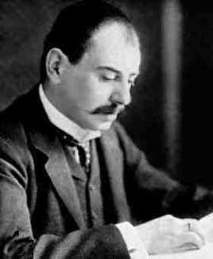

| Choisissez votre langue ! | Choose your language ! |
Historiquement ces notations ont été introduites pour comparer des suites particulières correspondant à l'efficacité de certains algorithmes en fonction de la taille des objets traités. Par exemple en fonction de n le nombre d'opérations (donc le temps) nécessaire(s) pour trier un tableau de taille n. Le but était alors de comparer les performances des divers algorithmes (tris à bulles, tris par sélection, tri par insertion, tri 'Shell', tri 'rapide',etc...). Ces notations ont été largement employées par le mathématicien Edmund Landau, mais leur 'paternité' de l'avis des historiens des sciences, reviendrait à son aîné Paul Bachmann.
Galerie des portraits
Historically, these notations were introduced to compare particular sequences with respect to the efficiency of certain algorithms according to the size of the processed objects. For example, depending on n the number of operations (therefore the time) necessary to sort an array of size n. The goal was then to compare the performances of the various algorithms (bubble sorts, sorts by selection, sort by insertion, 'Shell' sort, 'quick' sort, and so on). These notations were widely used by the mathematician Edmund Landau, but their 'paternity', in the opinion of science historians, would go to his elder Paul Bachmann.
Portrait Gallery
|
Edmund Landau -1877:1938
Allemagne
Germany
|
Paul Bachmann -1837:1920
Allemagne
Germany
|
|  |

|
La notation O
La relation 'O' est une relation de 'domination' d'une suite par une autre. La lettre O est utilisée parce que le rythme de croissance d'une suite est aussi appelée son 'ordre'.O symbol
The relation 'O' is a relation of 'domination' of one sequence by another. The letter O is used because the growth rate of a sequence is also called its 'order'.Remarques
Remarquons tout de suite qu'en cas d'existence la constante K n'est pas unique puisque si K 'fonctionne' K+1 aussi. Par ailleurs si K1 est tel que |v(n)|≤K1|u(n)| pour n≥N1, rien n'empêche de trouver K2<K1 et N2>N1 tels que |v(n)|≤K2|u(n)| pour n≥N2.
La notation ci-dessus est courante, mais elle n'est pas très rigoureuse. En particulier elle viole la sémantique du symbole '='. Pour être parfaitement rigoureux il faudrait que O(u) désigne une classe de suites et écrire en toute rigueur v ∈ O(u). Cependant l'écriture v=O(u) est courante et nous l'adopterons sachant qu'il s'agit d'un abus d'écriture.
Exemples:
- La suite vn=(2n²+1)/n est O(n). En effet, le rapport vn/n tend vers 2, donc pour n suffisamment grand on a vn≤3n.
- L'exemple précédent est un cas particulier du cas suivant:
Let us notice immediately that in case of existence the constant K is not unique since if K 'functions' K+1 also. Moreover if K1is such that |v(n)|≤K1|u(n)| for n≥N1, nothing prevents finding K2
The above notation is common, but not very rigorous. In particular it violates the semantics of the symbol '='. To be perfectly rigorous it would be necessary that O(u) designate a class of sequences and to write in all rigor v ∈ O(u). However the writing v=O(u) is current and we will adopt it knowing that it is about an abuse of writing.
Examples:
- The sequence vn=(2n²+1)/n is O(n). Indeed, the ratio vn/n tends towards 2, so for n sufficiently large we have avn≤3n.
- The previous example is a special case of the following case:
La condition suffisante ci-dessus n'est nullement nécessaire. En effet si v(n)=n×sin(n) et u(n)=n on a bien v=O(u) puisque |v(n)|≤|u(n)| mais le rapport v(n)/u(n) ne tend vers aucune limite.
Arithmétique de O
Les résultats suivants sont pratiquement évidents:
The above sufficient condition is not necessary. Indeed if v(n)=n×sin(n) and u(n)=n we have v=O(u) since |v(n)|≤|u(n)| but the ratio v(n)/u(n) tends towards no limit.
Arithmetic of O
The following results are practically obvious:
- O(u)+O(u)=O(u)
- λO(u)=O(u)
Ordres de grandeur des suites croissantes (aussi appelée 'complexité'):
c désigne une constante:- O(1) constante
- O(log(n)) logarithmique
- O((log(n))c) polylogarithmique
- O(n) linéaire
- O(nlog(n)) parfois appelée « linéarithmique », ou « quasi-linéaire »
- O(n2) quadratique
- O(nc) polynomiale
- O(cn) exponentielle , parfois « géométrique »
- O(n!) factorielle
La notation Θ
- O(u)+O(u)=O(u)
- λO(u)=O(u)
Orders of magnitude of increasing sequences (also called 'complexity'):
c denotes a constant:- O(1) constant
- O(log(n)) logarithmic
- O((log(n))c) polylogarithmique
- O(n) linear
- O(nlog(n)) sometimes called "linearithmic", or "quasi-linear"
- O(n2) quadratic
- O(nc) polynomial
- O(cn) exponential, sometimes "geometric"
- O(n!) factorial
The Θ symbol
Signalons tout de suite que souvent la notation O est utilisée en lieu et place de Θ surtout dans les manuels d'algorithmique. C'est regrettable, mais c'est ainsi. Le plus souvent c'est sans importance parce qu'on a seulement besoin d'une relation de majoration.
La notation o
The o symbol
La même remarque sur les abus d'écriture (voir notation 'O') s'applique à la notation 'o'.
Exemples
- n=o(n2)
- n=o(nc) (c constante >1)
- n=o(nLog(n))
- nc=o(qn) q>1
- qn=o(n!)
Arithmétique de o
On a les relations suivantes:- o(u)+o(u)=o(u)
- O(u)+o(u)=O(u)
- O(u)×o(u)=o(u)
- o(u)×o(u)=o(u2)
The same remark on overwriting (see 'O' symbol) applies to 'o' symbol.
Examples
- n=o(n2)
- n=o(nc) (c constant >1)
- n=o(nLog(n))
- nc=o(qn) q>1
- qn=o(n!)
Arithmetic of o
We have the following relations:- o(u)+o(u)=o(u)
- O(u)+o(u)=O(u)
- O(u)×o(u)=o(u)
- o(u)×o(u)=o(u2)
|
Création Gilles Dubois
Created by Gilles Dubois
|
Janvier 2022
January 2022
|
Version mobile Jquery
Mobile Jquery version
|
|